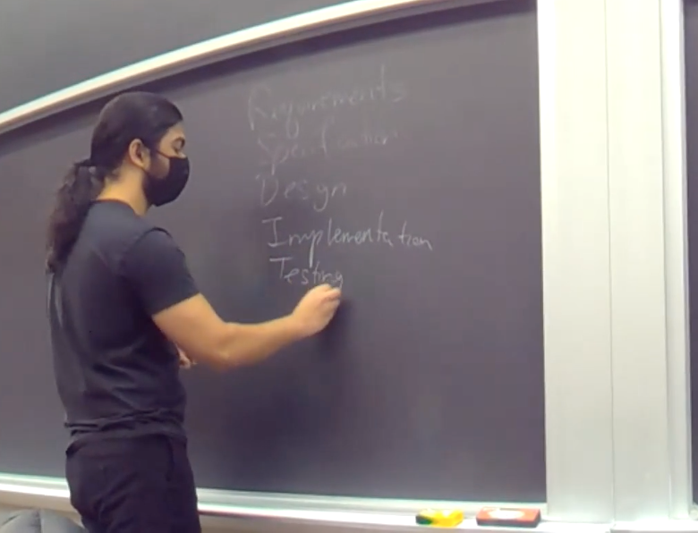

Shonal Gangopadhyay
Hello! I'm Shonal Gangopadhyay, a computer scientist, educator, and enthusiast of all things tech. While I have been deeply involved in academia, I am now pivoting into the industry, focusing on Machine Learning and Software Engineering. This page gives you a glimpse into my education and career.
Education
University of Minnesota - College of Science and Engineering: M.S. in Computer Science
- Focus on Artificial Intelligence, Machine Learning, and Software Engineering
University of Minnesota - College of Liberal Arts: B.A. in Computer Science
Profession
I am currently a Teaching Specialist at the University of Minnesota, where I teach CSCI 3081W - Program Design and Development in C++, the capstone course for Computer Science majors. I also occasionally teach CSCI 1113 - Intro to C/C++ for Scientists and Engineers.
More about me on my UMN faculty page.
Experience
Teaching Specialist | University of Minnesota | January 2022 - Present
- Designed and delivered industry-relevant coursework in C++ and software engineering, aligning with modern development practices.
- Led hands-on projects involving software design, algorithm optimization, and system architecture.
- Mentored students on best practices in software development, including version control, testing, debugging, and performance optimization.
Machine Learning Engineer | CView Consulting | May 2022 - August 2022
- Engineered ML-driven solutions to analyze learner performance and dynamically adjust assessment difficulty.
- Developed data pipelines to preprocess and transform large-scale educational datasets for feature extraction.
- Deployed ML models in AWS cloud environments, optimizing for efficiency and scalability.
- Collaborated with a cross-functional international team to meet project milestones and improve system performance.
Graduate Teaching Assistant | University of Minnesota | September 2021 - December 2021
- Conducted office hours, graded assignments, and led lab sessions for computer science courses.
- Developed instructional materials and managed large-scale student communication, including running workshops.
Undergraduate Teaching Assistant | University of Minnesota | January 2021 - May 2021
- Assisted in teaching a course with 300 students during the pandemic.
- Held office hours, graded assignments, and facilitated lab sessions.
Director | National Karate Academy of Martial Arts | June 2014 - January 2019
- Managed and operated a martial arts school with over 200 students.
- Handled all business aspects, including sales, inventory, and management.
- Designed and taught martial arts classes, fostering discipline and personal growth.
- Successfully tripled the school's monthly income through effective business strategies.
Skills & Abilities
- Programming Languages: Python, C++, Java
- Machine Learning: PyTorch, XGBoost, sklearn, TensorFlow
- Development Tools: Docker, AWS, SpaCy, NLTK
- Database & Data Engineering: MongoDB, data ingestion, feature extraction
- Software Engineering: Git, Jira, CI/CD pipelines
- Operating Systems: Linux, Windows
- Web Development: HTML, CSS
- Strong problem-solving abilities and a results-oriented approach
- Mentorship and technical communication
- Business & Management: Sales, inventory management, financial planning, customer relations, staff training, and leadership
Achievements
- 5th degree black belt at National Karate Schools - December 2024
- John T. Riedl Memorial Graduate Teaching Assistant Award - Spring 2022